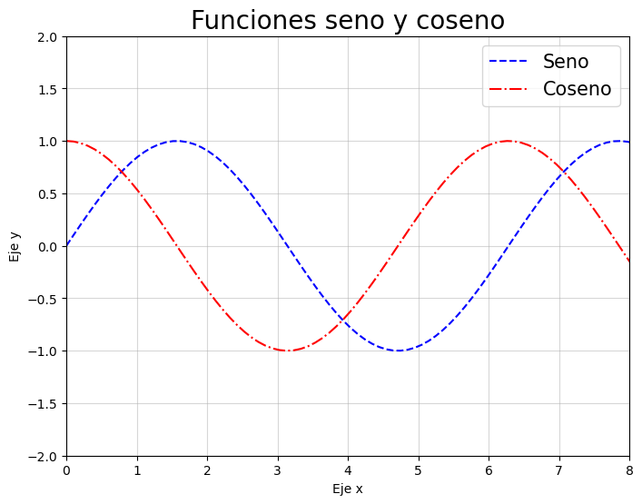
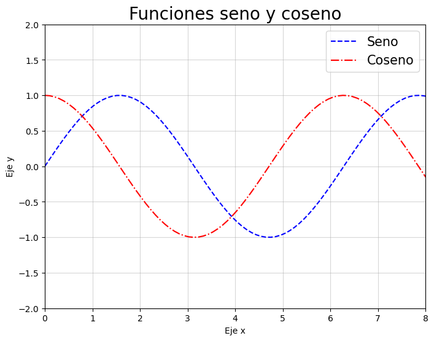
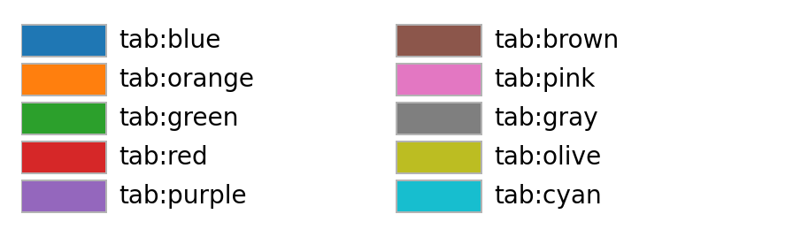
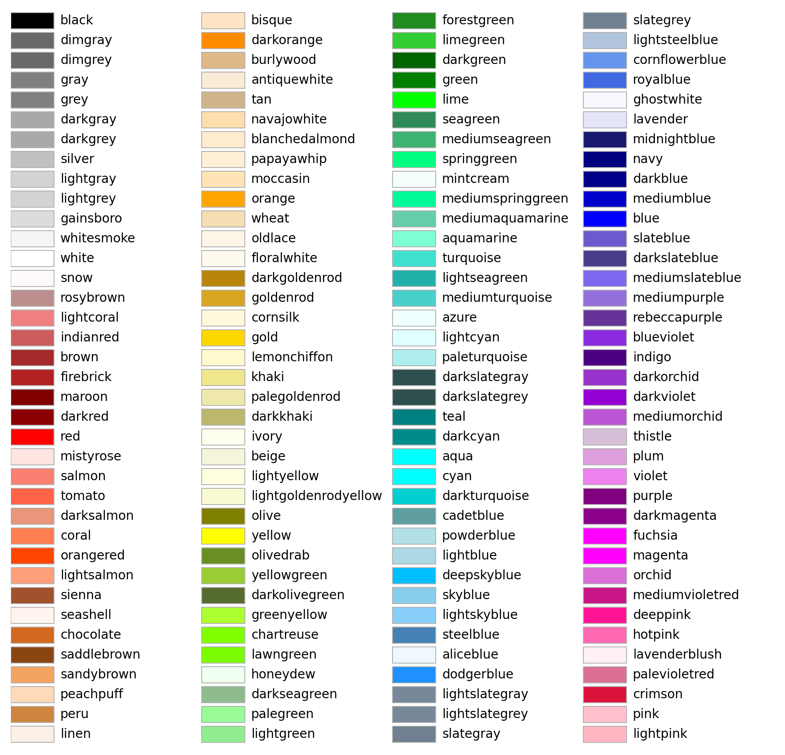

Representación de resultados con matplotlib y seaborn
Representación de resultados con matplotlib y seaborn
- Dedicaremos la clase de hoy a estudiar la representación de datos y resultados.
- En Python, la librería fundamental para producir gráficas en 2D es matplotlib, en la cual se basan otras librerías más avanzadas como seaborn.
- Con esto completamos la lista de imports básicos para un programa de análisis de datos:
import numpy as np
import pandas as pd
import matplotlib.pyplot as plt
Ejemplo básico
datos = np.arange(40, 100) # {40, 41, ..., 99}
plt.plot(datos)
plt.show()
Pipeline para plottear una figura
- Crear el entorno de dibujado: una ventana en la que estará nuestra figura -> plt.figure()
Opcionalmente, ajustar el tamaño con figsize (argumentos en pulgadas) - Dibujar la figura usando plt.plot() u otra función más especializada
Acepta como argumentos dos arrays, que corresponderán a los datos del eje $x$ e $y$, respectivamente.
Hay una gran variedad de argumentos opcionales, que permiten controlar:- El estilo de línea: linestyle="-" (o "solid"), linestyle="--" ("dashed"), linestyle=":" ("dotted"), linestyle="-." ("dashdot"), linestyle="" ("none")
- El color de la línea: color=... Muchas posibilidades para indicar el color: por nombre ("blue", "green"...), abreviatura ("b", "g"...), RGB/RGBA (e.g. (0.1, 0.2, 0.5)), case-insensitive hex ('#0f0f0f'), paleta Tableau ('tab:blue'), paleta xkcd ('xkcd:sky blue'), etc.
- El marcador de los datos de entrada: marker="." (punto), marker="o" (círculo), marker="s" (cuadrado), marker="v" (triángulo hacia abajo), marker="+" (plus), etc. Lista completa: https://matplotlib.org/stable/api/markers_api.html
- Otros: markersize, linewidth, etc.
- Llamar varias veces a plt.plot() permite superponer las representaciones. Para distinguirlas a posteriori, es recomendable darles una etiqueta con label.
fig = plt.figure()
fig = plt.figure(figsize=(8, 6))
fig = plt.figure(figsize=(8, 6))
ventas_diarias = [200, 250, 300, 150, 400, 500, 450]
plt.plot(ventas_diarias, linestyle=':')

fig = plt.figure(figsize=(8, 6))
ventas_diarias = [200, 250, 300, 150, 400, 500, 450]
plt.plot(ventas_diarias, linestyle=':',
color='red')
fig = plt.figure(figsize=(8, 6))
ventas_diarias = [200, 250, 300, 150, 400, 500, 450]
plt.plot(ventas_diarias, linestyle=':',
color='red',
marker='s')
fig = plt.figure(figsize=(8, 6))
ventas_diarias = [200, 250, 300, 150, 400, 500, 450]
plt.plot(ventas_diarias, linestyle=':', linewidth=2,
color='red',
marker='s', markersize=10)
fig = plt.figure(figsize=(8, 6))
# 100 puntos entre 0 y 10
x = np.linspace(0, 10, 100)
y1 = np.sin(x)
y2 = np.cos(x)
plt.plot(x, y1, label="Seno",
color="blue", linestyle="--")
plt.plot(x, y2, label="Coseno",
color="red", linestyle="-.")
Pipeline para plottear una figura
- Poner nombre a los ejes
- Explicitar los límites de los ejes
- Poner un título
- Añadir una leyenda
- Añadir una cuadrícula
- Mostrar la figura

 

fig = plt.figure(figsize=(8, 6))
x = np.linspace(0, 10, 100) # 100 puntos entre 0 y 10
y1 = np.sin(x)
y2 = np.cos(x)
plt.plot(x, y1, label="Seno", color="blue", linestyle="--")
plt.plot(x, y2, label="Coseno", color="red", linestyle="-.")
plt.xlabel("Eje x")
plt.ylabel("Eje y")
fig = plt.figure(figsize=(8, 6))
x = np.linspace(0, 10, 100) # 100 puntos entre 0 y 10
y1 = np.sin(x)
y2 = np.cos(x)
plt.plot(x, y1, label="Seno", color="blue", linestyle="--")
plt.plot(x, y2, label="Coseno", color="red", linestyle="-.")
plt.xlabel("Eje x")
plt.ylabel("Eje y")
plt.xlim(0, 8)
plt.ylim(-2, 2)
fig = plt.figure(figsize=(8, 6))
x = np.linspace(0, 10, 100) # 100 puntos entre 0 y 10
y1 = np.sin(x)
y2 = np.cos(x)
plt.plot(x, y1, label="Seno", color="blue", linestyle="--")
plt.plot(x, y2, label="Coseno", color="red", linestyle="-.")
plt.xlabel("Eje x")
plt.ylabel("Eje y")
plt.xlim(0, 8)
plt.ylim(-2, 2)
plt.title("Funciones seno y coseno", fontsize=20)
fig = plt.figure(figsize=(8, 6))
x = np.linspace(0, 10, 100) # 100 puntos entre 0 y 10
y1 = np.sin(x)
y2 = np.cos(x)
plt.plot(x, y1, label="Seno", color="blue", linestyle="--")
plt.plot(x, y2, label="Coseno", color="red", linestyle="-.")
plt.xlabel("Eje x")
plt.ylabel("Eje y")
plt.xlim(0, 8)
plt.ylim(-2, 2)
plt.title("Funciones seno y coseno", fontsize=20)
plt.legend(fontsize=15, loc="upper right") # loc="best" elige la mejor posición
fig = plt.figure(figsize=(8, 6))
x = np.linspace(0, 10, 100) # 100 puntos entre 0 y 10
y1 = np.sin(x)
y2 = np.cos(x)
plt.plot(x, y1, label="Seno", color="blue", linestyle="--")
plt.plot(x, y2, label="Coseno", color="red", linestyle="-.")
plt.xlabel("Eje x")
plt.ylabel("Eje y")
plt.xlim(0, 8)
plt.ylim(-2, 2)
plt.title("Funciones seno y coseno", fontsize=20)
plt.legend(fontsize=15, loc="upper right")
# loc="best" elige la mejor posición
plt.grid(True, alpha=0.5)
fig = plt.figure(figsize=(8, 6))
x = np.linspace(0, 10, 100) # 100 puntos entre 0 y 10
y1 = np.sin(x)
y2 = np.cos(x)
plt.plot(x, y1, label="Seno", color="blue", linestyle="--")
plt.plot(x, y2, label="Coseno", color="red", linestyle="-.")
plt.xlabel("Eje x")
plt.ylabel("Eje y")
plt.xlim(0, 8)
plt.ylim(-2, 2)
plt.title("Funciones seno y coseno", fontsize=20)
plt.legend(fontsize=15, loc="upper right")
# loc="best" elige la mejor posición
plt.grid(True, alpha=0.5)
plt.show()
Varios subplots
- En una figura, podemos crear varios subplots (subgráficas) usando plt.subplots() o fig.add_subplot()
- Se puede controlar cada subgráfica individualmente a través de su eje
ax - Importante: el nombre de muchas funciones es distinto:
ax.set_title()en vez deplt.title(),ax.set_xlabel()en vez deplt.xlabel(), etc. - Si solo tenemos una fila/columna de subplots, el conjunto de ejes es un array. Si hay varias filas y columnas, es una matriz.
x = np.linspace(-2, 2, 100) # 100 puntos entre -2 y 2
fig, axs = plt.subplots(2, 2) # 2 filas, 2 columnas
axs[0, 0].plot(x, x)
# LaTeX works guys
axs[0, 0].set_title('$y=x$')
axs[0, 1].plot(x, x ** 2, 'tab:orange')
axs[0, 1].set_title('$y=x^2$')
axs[1, 0].plot(x, x ** 3, 'tab:green')
axs[1, 0].set_title('$y=x^3$')
axs[1, 1].plot(x, x ** 4, 'tab:red')
axs[1, 1].set_title('$y=x^4$')
for ax in axs.flat:
ax.set(xlabel='x', ylabel='y')
# Escondemos las etiquetas del eje x en los plots superiores y las
# etiquetas del eje y en los plots de la derecha.
for ax in axs.flat:
ax.label_outer()
fig.suptitle("Funciones polinómicas", fontsize=16)
plt.show()
Colores
La elección de colores es IMPORTANTE y delicada. Pensad en:
- ¿Datos secuenciales? ¿Divergentes? ¿Cualitativos?
- Número de categorías
- Transparencia
- Daltonismo
- etc.
Recomendación: https://colorbrewer2.org
Algunas paletas de colores
Colores base

Paleta Tableau
Colores CSS
xkcd color survey: https://xkcd.com/color/rgb/
Mapas de colores
Hay funciones de matplotlib distintas de plt.plot() que permiten
representar otros tipos de gráficos.
Algunas tienen un parámetro cmap que permite tomar los colores de un
mapa de colores, que permite mappear
escalares a colores de forma continua. Ejemplos: plt.scatter(),
plt.imshow(), etc.
Más colormaps: https://matplotlib.org/stable/users/explain/colors/colormaps.html
Otros tipos de gráficos
Barplots
Verticales: plt.bar()
Horizontales: plt.barh()
altura_barras = [60, 10, 15, 50, 45]
categorias = ('A', 'B', 'C', 'D', 'E')
fig = plt.figure()
plt.bar(categorias, altura_barras,
color='skyblue', alpha=0.5, edgecolor="black")
plt.show()
Grouped barplots
# DataFrame de 6 filas y 2 columnas con datos aleatorios
df = pd.DataFrame(np.random.rand(6, 2),
index=['one', 'two', 'three', 'four', 'five', 'six'],
columns=['A', 'B'])
width = 0.25 # Ancho de las barras
x = np.arange(len(df.index)) # Posiciones de las barras
fig = plt.figure(figsize=(8, 6))
plt.bar(x - width/2, df['A'], width, label='A', color=np.array([166,206,227])/255)
plt.bar(x + width/2, df['B'], width, label='B', color=np.array([178,223,138])/255, hatch='//')
plt.xticks(x, df.index) # Añadimos las etiquetas del eje x
plt.legend(fontsize=20)
plt.show()
Otros tipos de gráficos
Histogramas
Si el argumento de bins es un entero, define el número de bins.
Si es un array, define los límites de los bins.
# 100 muestras de una distribución normal de media 6 y std 1
notas = np.random.normal(loc=6, scale=1.5, size=100)
# Crear histograma
plt.figure(figsize=(8, 5))
plt.hist(notas, bins=np.arange(0, 11, 1),
color='skyblue', edgecolor='black', alpha=0.75)
plt.xlabel("Nota")
plt.ylabel("Número de alumnos")
plt.xticks(np.arange(0, 11, 1)) # Etiquetas del eje x
plt.axvline(np.mean(grades), color='purple', linestyle='--',
linewidth=2, label="Media")
plt.legend(fontsize=20, loc="best")
plt.show()
Scatter plot
n_puntos = 100
x = np.random.rand(n_puntos) * 10 # Rango [0, 10)
y = np.random.rand(n_puntos) * 40 # Rango [0, 40)
tam = np.random.rand(n_puntos) * 200 # Tamaño de los puntos
colores = np.random.rand(n_puntos) # Color de los puntos
plt.figure(figsize=(8, 5))
plt.scatter(x, y, s=tam, c=colores, alpha=0.5, cmap='inferno')
plt.colorbar() # Muestra la barra de colores
plt.xlabel("Eje x")
plt.ylabel("Eje y")
plt.show()
Otros tipos de gráficos
Gráfico circular
categorias = ['Menos de 20 años', '21-30 años', '31-40 años', '50+ años']
porcentajes = [30, 25, 20, 25]
colores = ['#ffffd4', '#fed98e', '#fe9929', '#cc4c02']
resalte = (0.2, 0, 0, 0) # Resaltamos la primera categoría
plt.figure(figsize=(7, 7))
plt.pie(porcentajes, labels=categorias, autopct='%1.1f%%', colors=colores,
startangle=0, shadow=True, explode=resalte)
plt.show()
Boxplots
(¡También hay violinplots!)
datos = [np.random.normal(loc=media, scale=150.0, size=500) for media in [996, 2576, 2249, 1636]]
plt.figure(figsize=(8, 6))
plt.boxplot(datos, labels=['Grecia', 'Alemania', 'Francia', 'España'], patch_artist=True,
boxprops=dict(facecolor='lightgreen'))
# patch_artist=True hace que se rellenen las cajas se rellenen con color
plt.xlabel("Países")
plt.ylabel("Salario medio")
plt.grid(axis='y', alpha=0.5)
plt.show()
Otros tipos de gráficos
Contornos
x = np.linspace(-5, 5, 50)
y = np.linspace(-5, 5, 50)
X, Y = np.meshgrid(x, y)
# X e Y son matrices 2D que contienen las coordenadas de los puntos
# Definimos la función a plottear
Z = 2* X**2 + Y**2
plt.figure(figsize=(7, 5))
contour = plt.contour(X, Y, Z, levels=15, cmap='viridis')
plt.colorbar(contour) # Añadimos una barra de colores
plt.show()
Contornos con relleno
Solo hace falta cambiar contour por contourf
x = np.linspace(-5, 5, 50)
y = np.linspace(-5, 5, 50)
X, Y = np.meshgrid(x, y)
# X e Y son matrices 2D que contienen las coordenadas de los puntos
# Definimos la función a plottear
Z = 2* X**2 + Y**2
plt.figure(figsize=(7, 5))
contour = plt.contourf(X, Y, Z, levels=15, cmap='viridis')
plt.colorbar(contour) # Añadimos una barra de colores
plt.show()
Seaborn
Seaborn
- Es una biblioteca de visualización avanzada construida sobre matplotlib.
- Permite crear gráficos más vistosos y tiene numerosas integraciones con DataFrames de pandas.
- Es más sencilla de usar que matplotlib, pero más difícil de configurar.
Ejemplo: heatmap sobre matriz de correlaciones
import seaborn as sns
auto_df = sns.load_dataset('mpg')
df_num = auto_df.select_dtypes('number')
corr_mat = df_num.corr()
plt.figure(figsize=(8, 6))
cmap = sns.diverging_palette(500, 10, as_cmap=True)
sns.heatmap(corr_mat, annot=True, cmap=cmap, fmt=".2f", linewidths=0.5)
plt.title("Heatmap de Correlaciones")
plt.show()
Ejemplo: pairplot
import seaborn as sns
sns.set_theme(style="ticks")
iris = sns.load_dataset("iris")
sns.pairplot(iris, hue="species",
palette="husl",
diag_kind="kde",
diag_kws=dict(fill=True),
markers=["o", "s", "D"])
plt.show()